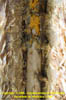

Apresentação
Medula Espinhal
Síndromes medulares
Tronco Encefálico
Cerebelo
Diencéfalo e
Núcleos da Base
Córtex cerebral
Vascularização do SNC e Meninges
Cortes coronais
do Encéfalo
Roteiro das
aulas práticas
Aulas Teóricas
Neuropatologia
Neuroimagem
Links
Notas
Autores
Medula espinhal
|
1. Medula espinhal fetal dentro do canal raquiano - Corte sagital mediano |
2. Cauda eqüína |
 3. Medula espinhal dentro do canal raquiano - Espaço epidural e seus conteúdos |
|
4. Medula espinhal fora do canal raquiano exposta após abertura da dura-máter |
5. Superfície anterior da medula espinhal após retirada da aracnóide |
6. Superfície posterior da medula espinhal |
|
7. Corte transversal de medula espinhal cervical |
8. Corte transversal de medula espinhal torácica |
9. Corte transversal de medula espinhal lombar |
|
10. Corte transversal da medula espinhal em nível sacral |